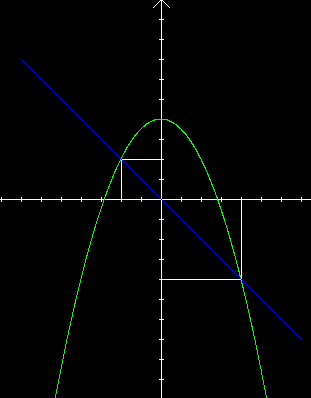

| Choisissez votre langue ! | Choose your language ! |
Fonctions monotones
Monotonic functions
Nous avons déjà vu la notion d'application avec une relation d'ordre.
Nous appliquons ici ces notions aux fonctions numériques.
La situation est tout à fait semblable aux .
Nous appliquons ici ces notions aux fonctions numériques.
La situation est tout à fait semblable aux .
Fonctions strictement monotones
Strictement croissantes
We have already seen the notion of application with an order relation.
Here we apply these notions to numerical functions.
The situation is quite similar to .
Here we apply these notions to numerical functions.
The situation is quite similar to .
Strictly monotonic functions
Strictly increasing
définition 1
On dit que f est
'strictement croissante'
sur D si et seulement si: ∀ (x0,x1) ∈ D×D x1 > x0 ⇒ f(x1) > f(x0).
definition 1
We say that f is
'strictly increasing'
on D if and only if: ∀ (x0,x1) ∈ D×D x1 > x0 ⇒ f(x1) > f(x0).
Illustration (l'allure est 'montante' quand on parcourt la courbe de gauche à droite):
Illustration (the pace is 'rising' when the curve is traversed from left to right):

Strictement décroissantes
Strictly decreasing
définition 2
On dit que f est
'strictement décroissante'
sur D si et seulement si: ∀ (x0,x1) ∈ D×D x1 > x0 ⇒ f(x1) < f(x0).
definition 2
We say that f is
'strictly decreasing'
on D if and only if: ∀ (x0,x1) ∈ D×D x1 > x0 ⇒ f(x1) < f(x0).
Illustration (l'allure est 'descendante' quand on parcourt la courbe de gauche à droite):
Illustration (the pace is 'descending' when the curve is traversed from left to right):
définition 3
On dit que f est
'strictement monotone'
sur D si et seulement si: f est strictement croissante ou strictement décroissante sur D.
definition 3
We say that f is
'strictly monotonic'
on D if and only if: f is strictly increasing or strictly decreasing on D.
Propriété importante
Important property
propriété 1
Toute fonction strictement monotone sur son domaine est .
property 1
Any strictly monotone function on its domain is .
La preuve résulte du fait que ≥ est une relation d' sur ℝ.
Fonctions monotones (au sens large)
Croissantes
The proof results from the fact that ≥ is a relation of on ℝ.
Monotonic functions (in the wider sense)
Increasing
définition 4
On dit que f est
'croissante au sens large'
sur D si et seulement si: ∀ (x0,x1) ∈ D×D x1 ≥ x0 ⇒ f(x1) ≥ f(x0).
definition 4
We say that f is
'increasing in the wider sense'
over D if and only if: ∀ (x0,x1) ∈ D×D x1 ≥ x0 ⇒ f(x1) ≥ f(x0).
Illustration (il peut y avoir un ou plusieurs 'paliers'):
Illustration (there can be one or more 'levellings'):
Décroissantes
Decreasing
définition 5
On dit que f est
'décroissante au sens large'
sur D si et seulement si: ∀ (x0,x1) ∈ D×D x1 ≥ x0 ⇒ f(x1) ≤ f(x0).
definition 5
We say that f is
'decreasing in the wider sense'
over D if and only if: ∀ (x0,x1) ∈ D×D x1 ≥ x0 ⇒ f(x1) ≤ f(x0).
Illustration (il peut y avoir un ou plusieurs 'paliers'):
Illustration (there can be one or more 'levellings'):
Importance du domaine de définition
La mention du domaine de définition est particulièrement importante pour tous les problèmes de monotonie.Dans l'exemple ci-dessous, la fonction est:
- strictement croissante sur tout intervalle de la forme ]-∞,a] avec a ≤ -2
- croissante au sens large sur tout intervalle de la forme ]-∞,a] avec a ≤ 2
- strictement décroissante sur tout intervalle de la forme[a,+∞[ avec a ≥ 2
- décroissante au sens large sur tout intervalle de la forme[a,+∞[ avec a ≥ -2
- non monotone sur tout intervalle de la forme [a,b] avec a < -2 et b > 2
Importance of the definition domain
Mentioning the domain of definition is particularly important for all monotonicity problems.In the example below, the function is:
- strictly increasing on any interval of the form ]-∞,a] with a ≤ -2
- increasing in the wider sense on any interval of the form ]-∞,a] with a ≤ 2
- strictly decreasing on any interval of the form [a,+∞[ with a ≥ 2
- decreasing in the wider sense on any interval of the form [a,+∞[ with a ≥ -2
- non-monotonic on any interval of the form [a,b] with a<-2 and b>2
Taux de variation
Si x0 et x1 désigne des éléments distincts du domaine de définition D de f.Average rate of change
If x0 and x1 denote distinct elements of the domain of definition D of f.définition 6
On appelle
'taux d'accroissement de f de x0 à x1'
la quantité:
\( \displaystyle \Delta f\left ( x_{0},x_{1} \right )=\frac{f\left ( x_{1} \right )-f\left ( x_{0} \right )}{x_{1}-x_{0}} \)
definition 6
We call
'average rate of change of f from x0 to x1'
the quantity:
\( \displaystyle \Delta f\left ( x_{1},x_{2} \right )=\frac{f\left ( x_{1} \right )-f\left ( x_{0} \right )}{x_{1}-x_{0}} \)
Si D est un intervalle I fini ou infini, les propriétés suivantes sont pratiquement évidentes:
If D is a finite or infinite I interval, the following properties are practically obvious:
propriété 2
Une condition nécessaire et suffisante pour que f soit strictement croissante sur I est que: ∀(x0,x1)∈I2 x0≠x1 Δf(x0,x1) > 0.
property 2
A necessary and sufficient condition for f to be strictly increasing over I is that: ∀(x0,x1)∈I2 x0≠x1 Δf(x0,x1) > 0.
propriété 3
Une condition nécessaire et suffisante pour que f soit strictement décroissante sur I est que: ∀(x0,x1)∈I2 x0≠x1 Δf(x0,x1) < 0.
property 3
A necessary and sufficient condition for f to be strictly decreasing over I is that: ∀(x0,x1)∈I2 x0≠x1 Δf(x0,x1) < 0. propriété 4
Une condition nécessaire et suffisante pour que f soit croissante sur I est que: ∀(x0,x1)∈I2 x0≠x1 Δf(x0,x1) ≥ 0.
property 4
A necessary and sufficient condition for f to be increasing on I is that: ∀(x0,x1)∈I2 x0≠x1 Δf(x0,x1) ≥ 0.
propriété 5
Une condition nécessaire et suffisante pour que f soit décroissante sur I est que: ∀(x0,x1)∈I2 x0≠x1 Δf(x0,x1) ≤ 0.
property 5
A necessary and sufficient condition for f to be decreasing over I is that: ∀(x0,x1)∈I2 x0≠x1 Δf(x0,x1) ≤ 0.
Le taux de variation est une notion très importante. Il indique par son signe le sens de variation de la fonction, il indique par sa magnitude le rythme de cette variation.
En outre l'étude de cette quantité sera par la suite à la base de la notion de dérivée.
L'interprétation géométrique est la suivante:
En outre l'étude de cette quantité sera par la suite à la base de la notion de dérivée.
L'interprétation géométrique est la suivante:
The average rate of change is a very important concept. It indicates by its sign the direction of variation of the function, it indicates by its magnitude the rhythm of this variation.
In addition, the study of this quantity will later be the basis of the notion of derivative.
The geometric interpretation is as follows:
In addition, the study of this quantity will later be the basis of the notion of derivative.
The geometric interpretation is as follows:

On voit ici que le taux de variation de la fonction f(x)=-x²/4+4 entre les points x0=-2 et x1=4 est égal à -1.
We see here that the average rate of change of the function f(x)=-x²/4+4 between the points x0=-2 and x1=4 is equal to -1.
propriété 6
D'une façon générale Δf(x0,x1) est la pente de la droite passant par les points (x0,f(x0)) et (x1,f(x1)).
property 6
We see that graphically Δf(x0,x1) is the slope of the straight line passing through the points (x0, f(x0)) and (x1,f(x1))
Monotonie et opérations algébriques
Nous renvoyons le lecteur aux exercices de cette section.Pour l'addition et la multiplication par un scalaire, .
Pour le produit, .
Monotonie et composition
Nous renvoyons le lecteur à .Monotonicity and algebraic operations
We refer the reader to the exercises in this section.For addition and multiplication by a scalar, .
For the product, .
Monotonicity and composition
We refer the reader to .|
Création Gilles Dubois - licence CC-BY-SA
Created by Gilles Dubois - licence CC-BY-SA
|
Septembre 2023
September 2023
|
Version mobile Jquery
Mobile Jquery version
|
|